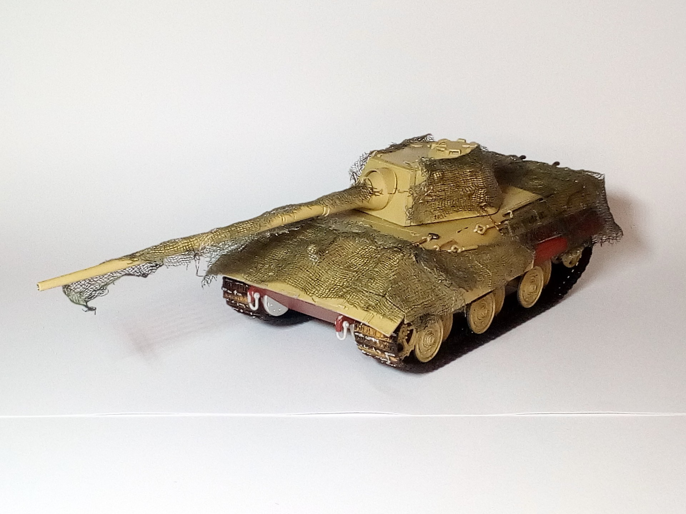

Mezzi militari · scale model archive
E50 tank
E50 tank — Kit: Trumpeter, Scale: 1/35. Late war german medium tank design Experimenting with camo net #1/35 #Trumpeter #E50

Photo gallery
English description
Late war german medium tank design
Experimenting with camo net
#1/35 #Trumpeter #E50
Descrizione italiana
Di fine guerra tedesco medium autoro progetto.
Experimenting con mimetica net.